Definition of the fitting region
Given the approximate position of a molecule 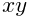
and a user-specified fitting radius 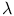, we define 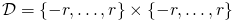
as a set of integer  coordinates, and 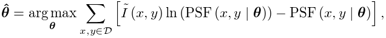
as intensity values of an 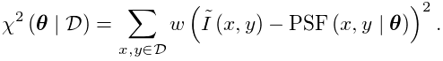 sub-image centered at the point
of the raw input image
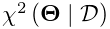, where 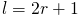 is the size of the sub-image. The desired sub-pixel
coordinates of the molecule are obtained as 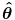
and 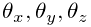, where 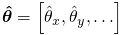
and 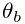 define the sub-pixel refinements of the coordinates
obtained by the methods described below.
coordinates, and 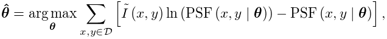
as intensity values of an 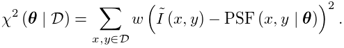 sub-image centered at the point
of the raw input image
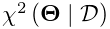, where 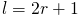 is the size of the sub-image. The desired sub-pixel
coordinates of the molecule are obtained as 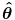
and 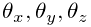, where 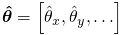
and 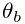 define the sub-pixel refinements of the coordinates
obtained by the methods described below.
Generated on Sun Oct 4 04:17:47 2015 by LaTeXML ![[LOGO]]()